超螺旋 Super Spiral
概要
超螺旋砲はLJミノの回転入れからTSTを狙う技です．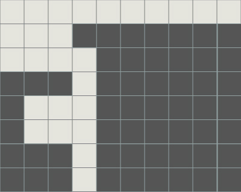 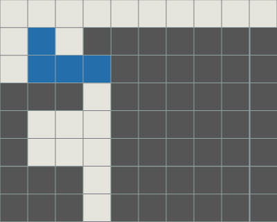 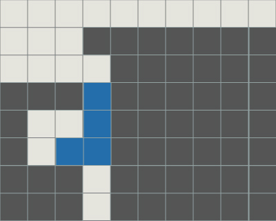 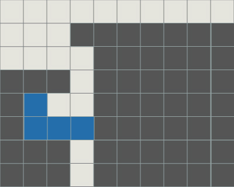
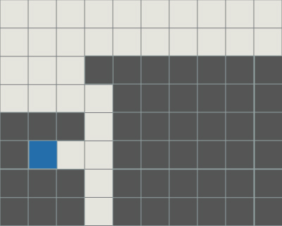 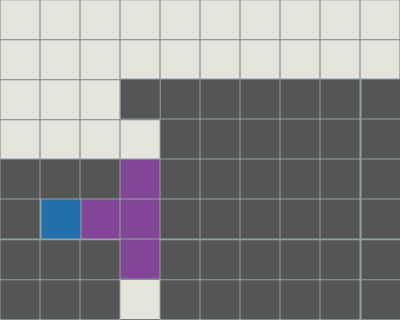 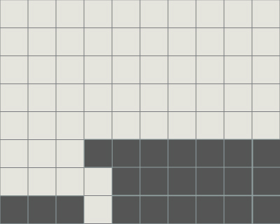
補足
地形によっては屋根を付けずにTSDにできます．
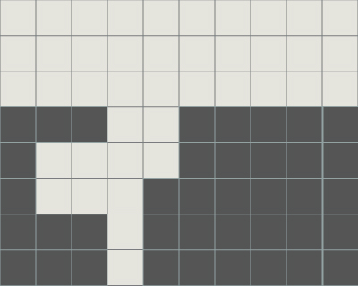 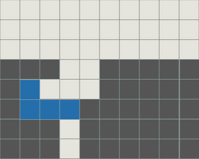 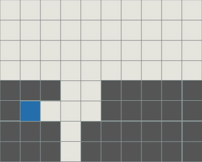
連関
ST砲
下穴の位置が異なるだけでST砲になります．
 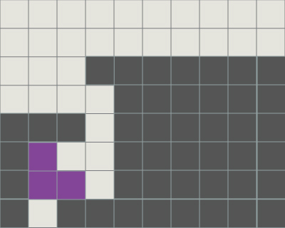
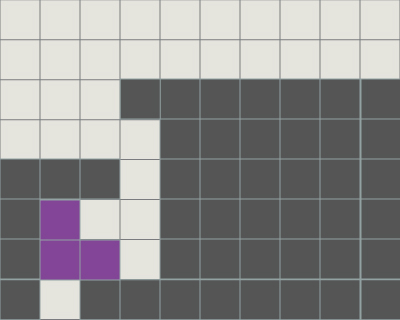 STSD
下部が1ブロック少ないだけでSTSDになります．STSD同様下穴の位置には注意しなければなりません．
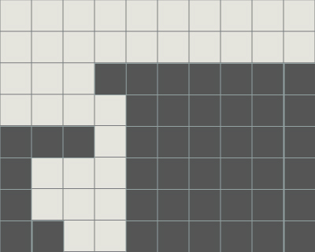 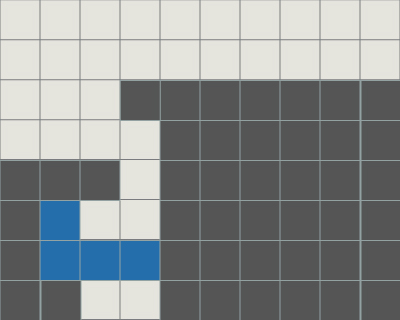 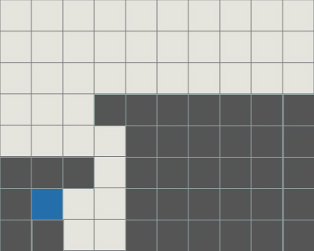
派生
さまざまな派生系が存在します．背面超螺旋
ライン消去によって屋根を空中に作り，反転した超螺旋です．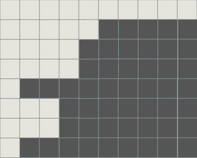 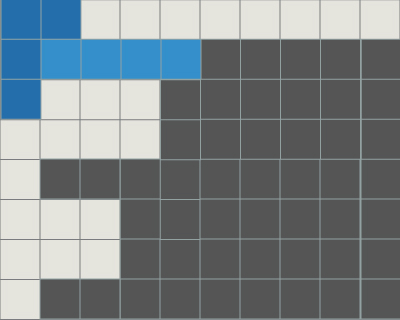 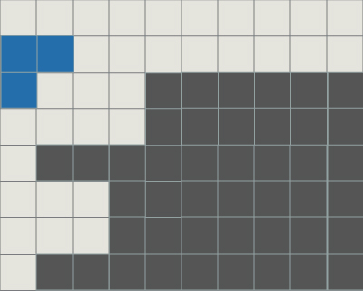 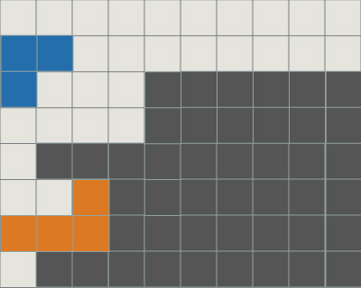 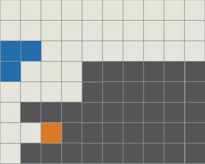
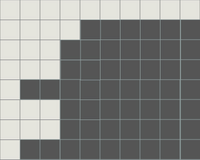 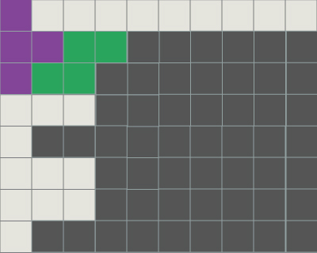 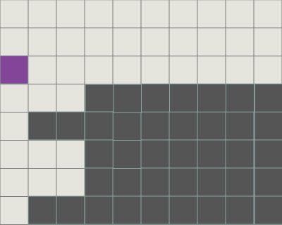 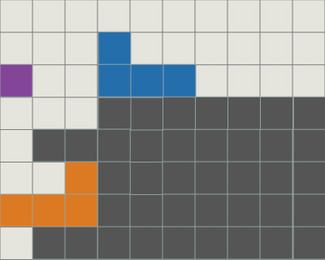 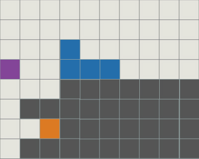
大超螺旋
大超螺旋はST砲とTSTの複合技です．LJミノのライン消去の方法に注意してください．
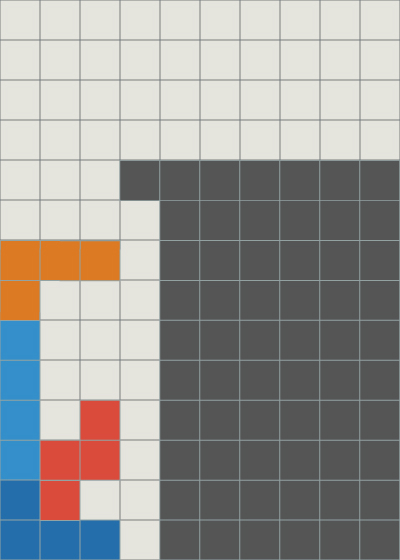 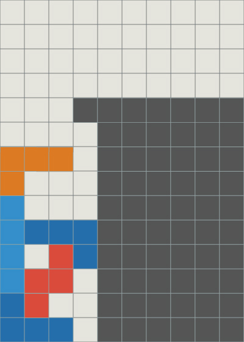 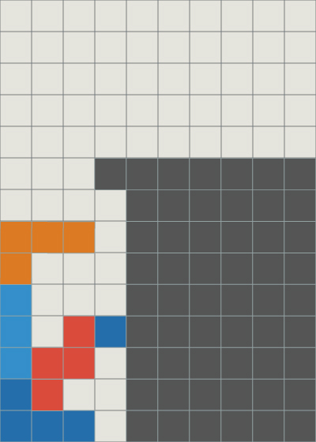
 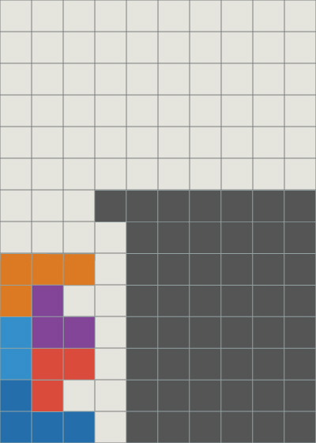
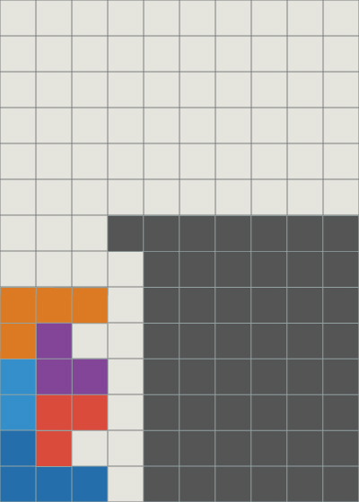 超螺旋2号 May
SZの回転入れからTSTを狙う技です． 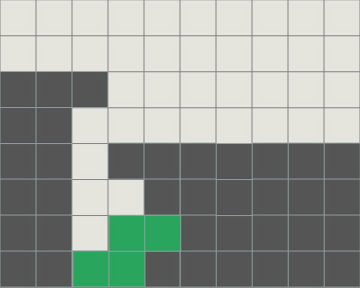
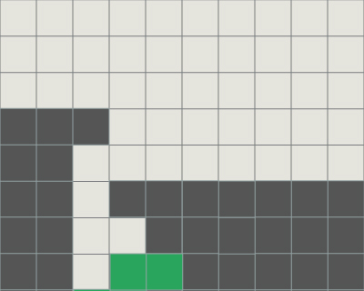
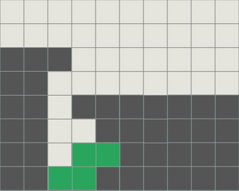
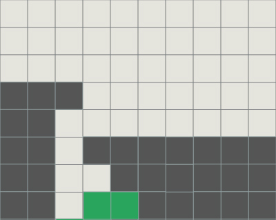